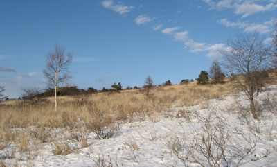

|
|||||||||||||||||||||||||||
|
|||||||||||||||||||||||||||
|
霧ヶ峰 |
| 開 催 日 | ２０１０年２月２７〜２８日 | |||
| リーダー | 高橋（保）、SR：福岡 | |||
| 報 告 者 | 高井（紀） | |||
| HP制作者 | 高井（紀） | |||
| 参加者数 | ９名 | |||
| 霧ヶ峰の大らかな高原を、ゆっくりとスキーで歩き登り滑る。その他に今年は担いで登る、下るが加わった。大雨の予報が、行動にふさわしい天気に転じ、雪の少なさなど何のその、歩くことの楽しさを満喫した。さらに、スキー以外にヒュッテジャヴェルでの薪ストーブを囲む豊富な話題の団欒も得がたいものである。 |
| ２月２７日 |
| 前日から明け方までの土砂降りの雨は止み曇り、その後晴れ間あり |
| 沢渡り9:40→物見岩→ブランシュ鷹山スキー場（昼食）→北の耳→沢渡り16:30 |
| A | ||
| ジャヴェルを出発してすぐ。雪はありそう〜 | やっぱり〜〜担ぐ |
| A | A | |||
| 雪を拾って歩く | シールをはずすが・・・ | 期待に反して、滑るよりは登る |
| A | ||
| 担ぐことに〜 | スキー場に出た！滑る滑る滑る |
| A | ||
| 食事も済んだ。スキー場上の大笹峰からジャベルヘ戻る | 車山とエコーバレースキー場 |
 |
A | |
| 帰りも歩きと担ぎ | 正面の北の耳の途中まで上り、雪のあるところをトラバース |
| A |  | |
| 雪はあるけどトラバース。正面下は八島ヶ原 | ジャヴェルはもうすぐ。まだ２月です。 |
| A | A | |||
| ジャヴェルに戻れば、ホットワインで本日の雪上散歩の無事に祝杯 | ||||
| ２月２８日 |
| 明け方にかけて予期せぬ雪！5〜10cm積もっていた。雪は止んで曇り、昼頃より晴れる |
| 八島ヶ原(1650m)→本沢→引き返し点(1380m)→八島ヶ原 |
 |
A |  |
| 昨日は茶色だった湿原が雪で白くなっている | 暗い林に入る |
| A | ||
| 植栽林を滑る | 本沢源頭のあたり |
 |
A | |
| 自然林に変わると明るくなる | 引き返し点から登り返す |
| 二日間の霧ヶ峰スキー散歩に満足でした！！ |
| A | ||
| GPSトラック： 右：１日目、左：２日目 | お世話様でした、リーダーさん |